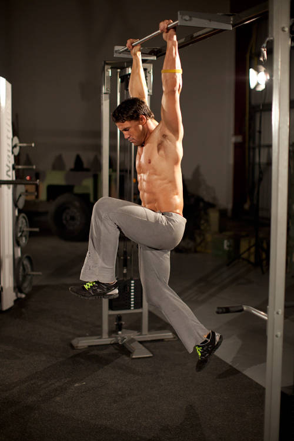

- Hang from a pull-up bar using a pronated grip. Your arms and legs should be extended. This will be your starting position.
- Begin by quickly raising one knee as high as you can. Do not swing your body or your legs. 3
- Immediately reverse the motion, returning that leg to the starting position. Simultaneously raise the opposite knee as high as possible.
- Continue alternating between legs until the set is complete.